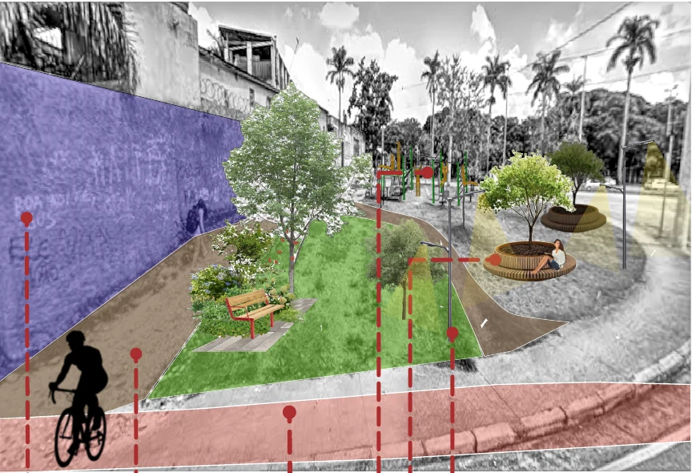
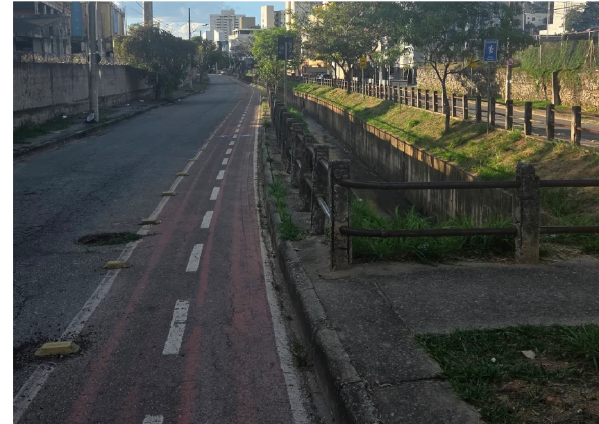
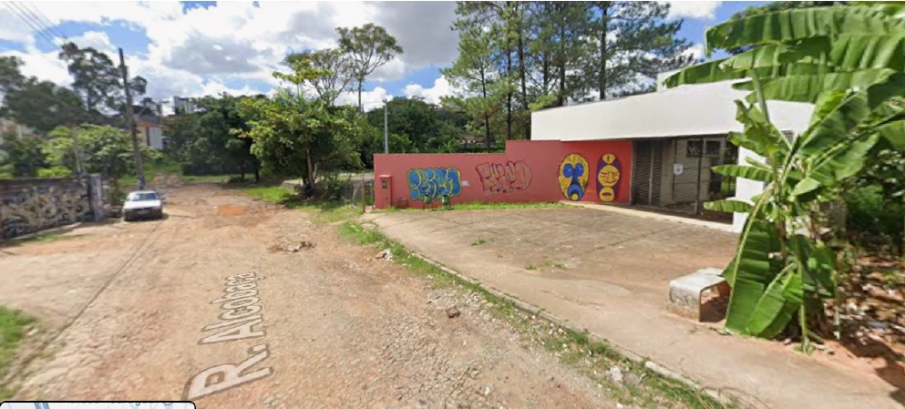
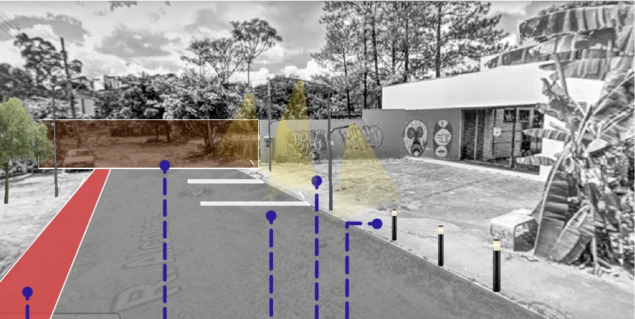

ExistenteProposta
ExistentePropostaPosto de Saúde São Francisco
Acesso voltado à avenida, travessia qualificada, arborização e iluminação direcionada aos pedestres.
Estudo preliminar / Belo Horizonte / 2026
Avenida Presidente Antônio Carlos e entorno. Travessias, percursos e espaços públicos conectados à vida cotidiana.
A Avenida Presidente Antônio Carlos conecta a Pampulha à região central e concentra transporte coletivo, moradia, comércio, serviços e grandes equipamentos. Seu espaço urbano, porém, permanece condicionado à circulação motorizada.
O trabalho identifica diretrizes de qualificação urbanística para o eixo e seu entorno, articulando deslocamentos a pé e de bicicleta, transporte coletivo, áreas verdes e espaços de permanência.
A análise compreende Pampulha, UFMG, Cachoeirinha e Lagoinha. O Setor UFMG é o recorte de aprofundamento projetual.
Perspectivas do estudo preliminar
Da travessia da avenida ao parque.
Vistas do material atualizado da autora.

Não foi possível carregar esta vista. Selecione outra imagem ou abra as pranchas completas.
A1 / Viaduto José Alencar
A passarela associa a transposição da avenida a uma praça suspensa, áreas de descanso e percursos integrados à vegetação.
Perspectiva do estudo preliminar fornecido pela autora. Pranchas de projeto, página 7.
Aplicação das diretrizes
Deslize para comparar as imagens.
Fotomontagens de caráter ilustrativo.
Cinco intervenções aproximam equipamentos, bairros e áreas verdes. As imagens apresentam a situação registrada no levantamento e as diretrizes propostas, sem representar obras executadas.
ExistentePropostaAcesso voltado à avenida, travessia qualificada, arborização e iluminação direcionada aos pedestres.


ExistentePropostaNovos percursos, bancos, arborização, iluminação e integração com a ciclovia qualificam a permanência.

 ExistenteProposta
ExistentePropostaPrioridade ao pedestre e acesso local de veículos, com jardim de chuva e iluminação de apoio ao comércio e à convivência.

 ExistenteProposta
ExistentePropostaContinuidade dos percursos de caminhada e bicicleta, com segregação, sinalização, guarda-corpos e iluminação.


ExistentePropostaAcesso secundário ao Parque Ecológico do Brejinho, articulado à caminhada, à bicicleta e à iluminação dos percursos.
Quatro setores, diferentes dinâmicas urbanas.
Explore a cartografia que fundamenta as propostas.

Do diagnóstico territorial
à experiência cotidiana.
Qualificar calçadas, travessias e conexões, com continuidade dos trajetos, acessibilidade, arborização e iluminação voltada ao pedestre.
Aproveitar áreas livres e espaços subutilizados para descanso, lazer e convivência, associados à vegetação e ao mobiliário urbano.
Manter o MOVE como eixo estruturador, conectar a rede cicloviária e estudar VLT e VLP como alternativas complementares.
Estimular a complementaridade entre moradia, comércio, serviços e atividades culturais, com fachadas voltadas para o espaço público.
Articular atividades com horários complementares à iluminação, à visibilidade dos percursos e ao conforto dos pedestres.
Adaptar áreas residuais e estruturas existentes para funções coletivas, culturais, comerciais e de permanência.
Mobilidade integrada
Comparação dos cenários
apresentados na monografia.
O MOVE é mantido como eixo estruturador. O cenário de referência apresenta a configuração utilizada na comparação desenvolvida pela autora.
Ler a comparação na monografiaDesenhos e implantação
O olhar sobre a avenida nasce da experiência cotidiana e ganha forma no encontro entre pessoas, campo e cartografia.
Percursos de campo, registros fotográficos, mapeamento e entrevista com a SUMOB se somam à escuta dos usuários. As 60 respostas ao formulário compõem a amostra exploratória da pesquisa.
Avenida Presidente Antônio Carlos e entorno em Belo Horizonte/MG
Síntese digital dos materiais fornecidos em 20 de novembro de 2026. O diagnóstico abrange a avenida; o aprofundamento projetual se concentra no Setor UFMG. As intervenções e os cenários de transporte são propostas acadêmicas. Cartografia: Letícia Oliveira Santos, com base em BH Maps, 2026.
Acervo atualizado em 20/11/2026
Da pesquisa ao desenvolvimento
das intervenções.
135 páginas / 10,3 MB
Versão de trabalho com comentários de revisão.Abrir PDF ↗Desenvolvimento projetual10 páginas / 34 MB
Implantação, cortes, acessos e perspectivas.Abrir PDF ↗Aplicação das diretrizes5 páginas / 17,3 MB
Situação existente, propostas e mapas-chave.Abrir PDF ↗